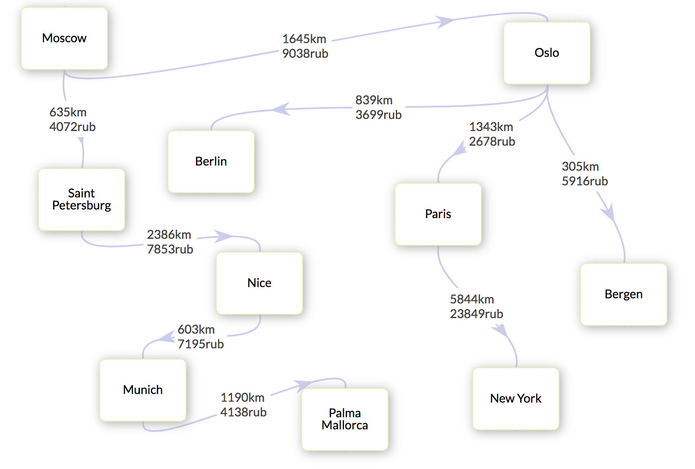

Travel Planner
Make your trip route discussions visually clear. Use the chart.

Try it without registration:
let's start!
Or login and do it together with your trip partners! Just use the VK form below: